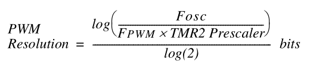

Episódio 19: Conhecendo o módulo CCP - Modo de Modulação por Largura de Pulso (PWM)
Voltar ao índice
Voltar ao Episódio 18
Ir para Episódio 20
Neste episodio falaremos sobre o ultimo modo sobre o modulo CCP. O modo abordado neste episodio sera o modo PWM[1] olhar esta nota (Pulse Width Modulation - Modulação por Largura de Pulso) sobre o pino RB3 que deve ser configurado como pino de saída.
A configuração do registrador CCP1CON para trabalhar no modo PWM é dada pela Tabela 19.1.
|
Tabela 19.1 - Bits de seleção do modo PWM
|
| CCP1M3 |
CCP1M2 |
CCP1M1 |
CCP1M0 |
Função |
| 0 |
0 |
0 |
0 |
desliga o modoPWM |
| 1 |
1 |
x |
x |
liga (ativa) modo PWM |
|
|
Fonte: ----------------------
|
Conforme Figura 19.1, a configuração é feita sobre os registradores CCPR1L, os bits CCP1X e CCP1Y (do registrador CCP1CON) e PR2. Também há a necessidade do Prescaler do Timer2.
Uma saída PWM no pino RB3/CCP1 é dada pela Figura 19.x, e assim o calculo do periodo PWM em segundos é dada pela equação:
|
Figura 19.1 - Equacao do periodo do PWM
|

|
|
Fonte: ----
|
A frequencia PWM é dada por
frequencia PWM = 1 / (PWM period)
Se o valor do registrador TMR2 for igual ao valor do registrador PR2, podem ocorrer 3 eventos no proximo ciclo de incremento.
-
O registrador TMR2 é limpo;
-
O pino RB3/CCP1 está setado (excessão: Se o dutty cycle for igual a 0%, o pino RB3/CCP1 não será setado);
-
O dutty cycle do sinal PWM é colocado do registrador CCPR1L dentro do registrador CCPR1H.
O dutty cycle PWM em segundos é calculado por:
|
Figura 15.2 - Equacao do dutty cycle do PWM
|
|
|
|
Fonte: ------
|
Note que CCPR1L:CCP1CON<5:4> gera um numero de 10 bits, logo cada intervalo será de VDD/1024.
A maxima resolução PWM em bits para uma frequencia PWM:
|
Figura 15.3 - Equacao do dutty cycle do PWM
|
|

|
|
Fonte: ------
|
Conforme o datasheet, o processo de configuração da operação PWM é:
-
Configure o periodo do PWM escrevendo-se no registrador PR2;
-
Configure o dutty cycle do PWM escrevendo-se no registrador CCPR1L e CCP1CON<5:4>;
-
Faça o pino RB3/CCP1 como pino de saída, limpando o bit TRISB<3>;
-
Configure o valor do Prescaler de TMR2 e ative o Timer2 ativando escrevendo em T2CON.
Vejamos um exemplo para fosc = 20 MHz, Timer Prescaler = 16 e PR2 = 0xFF.
Periodo PWM = (PR2 + 1) * 4 * Tosc * (Timer2 Prescaler)
= (255 + 1) * 4 * (1/(20*106)) * 16
= (256 * 16 * 10-6)/5
= 819,2 * 10-6 s
= 819,2 μs
Frequencia PWM = 1 / (Periodo PWM)
= 1 / (819,2 μs)
= 1 / (819,2 * 10-6 s)
= 1220,703125 Hz
Como a tensão VDD = 5 V, se quisermos aproximadamente 1,7 V na saida (pino RB3/CCP1) teremos que aplicar uma regra de 3:
5,0 V 1023
1,7 V n
5 V / 1,7 V = 1023 / n
n = (1,7 V / 5 V) * 1023
n = 347,82
Porém esse valor deve ser um numero natural, assim temos dois casos a analizar:
-
n = 347, tem-se
(5 V * (347 / 1023)) = 1,696 V
-
n = 348, tem-se
(5 V * (348 / 1023)) = 1,701 V
Supondo que queiramos fazer uso do valor 347, assim:
34710 = 0101.0110.112
Os dados para o dutty cycle PWM é
CCPR1L:CCP1CON<5:4> = 0101.0110.112
CCPR1L = 0101.01102
CCP1CON<5:4> = 112
Assim o dutty cycle PWM em segundos é
dutty cycle PWM = (347 / 1023) * Periodo PWM
= (347 / 1023) * 819,2 * 10-6 s
= 277,871 * 10-6 s
= 277,871 μs
A máxima resolução PWM é
max. resolução PWM = log( fosc / (fPWM * TMR2 Prescaler) ) / log(2)
= log( (20 * 106) / (1220,703125 * 16) ) / log(2)
= log( 1024 ) / log(2)
= 10 bits
A Tabela 19.2 mostra exemplos de frequencias e resoluções PWM para fosc = 20 MHz
|
Tabela 19.2 - Tabela de frequencias e resolução para fosc = 20 MHz
|
|
Exemplo 1 |
Exemplo 2 |
Exemplo 3 |
Exemplo 4 |
Exemplo 5 |
Exemplo 6 |
| Timer Prescaler TMR2 |
16 |
4 |
1 |
1 |
1 |
1 |
| PR2 |
0xFF |
0xFF |
0xFF |
0x3F |
0x1F |
0x17 |
| Frequência PWM |
1,22 kHz |
4,88 kHz |
19,53 kHz |
78,12 kHz |
153,3 kHz |
208,3 kHz |
| Maxima Resolução PWM |
10 |
10 |
10 |
8 |
7 |
6,5 |
|
|
Fonte: -----
|
A Tabela 19.3 mostra exemplos de frequencias e resoluções PWM para fosc = 4 MHz.
|
Tabela 19.3 - Tabela de frequencias e resolução para fosc = 4 MHz
|
|
Exemplo 1 |
Exemplo 2 |
Exemplo 3 |
Exemplo 4 |
Exemplo 5 |
Exemplo 6 |
| Timer Prescaler TMR2 |
16 |
4 |
1 |
1 |
1 |
1 |
| PR2 |
0xFF |
0xFF |
0xFF |
0x3F |
0x1F |
0x17 |
| Frequência PWM |
244,14 Hz |
976,56 Hz |
3,91 kHz |
15,62 kHz |
31,25 kHz |
41,66 kHz |
| Maxima Resolução PWM |
10 |
10 |
10 |
8 |
7 |
6,6 |
|
|
Fonte: -----
|
|
Figura 19.4 - Diagrama de bloco de operação do modo de PWM
|
|
|
|
Fonte: -------
|
|
Figura 19.5 - Saida PWM
|
|
|
|
Fonte: -------
|
Exemplo de aplicação
|
Código 19.1 - Código do exemplo de uso do periférico PWM
|
; CONFIGURACOES INICIAS
; D:\Program Files (x86)\Microchip\MPLABX\v5.30\mpasmx\p16f628a.inc
; D:\Program Files (x86)\Microchip\xc8\v2.10\mpasmx\p16f628a.inc
#INCLUDE
LIST P=16F628A
; REGISTER 14-1: CONFIGURATION WORD REGISTER
; CP: Flash Program Memory Code Protection bit
; LVP: Low-Voltage Programming Enable bit
; BOREN: Brown-out Reset Enable bit
; MCLRE: RA5/MCLR/V PP Pin Function Select bit
; PWRTE: Power-up Timer Enable bit
; WDTE: Watchdog Timer Enable bit
; XT: Max 4 MHz crystal
__CONFIG _BODEN_ON & _MCLRE_ON & _LVP_OFF & _WDT_OFF & _XT_OSC & _CP_OFF & _PWRTE_ON
#DEFINE W_TEMP 0x20
#DEFINE STATUS_TEMP 0x21
ORG 0x00 ; TRATAMENTO DO RESET
GOTO INICIAPARAMETROS
ORG 0x04 ; TRATAMENTO DAS INTERRUPCOES
MOVWF W_TEMP
SWAPF STATUS, 0
MOVWF STATUS_TEMP
BTFSS PIR1, TMR2IF ; INTERRUPCAO PERIFERICOS (CCP 1/PWM - SECAO 9.0)
GOTO SAIDA_INTERRUPCAO
BCF PIR1, TMR2IF
;
; LINHAS PARA TRATAMENTO DA INTERRUPCAO DO MODULO CCP
;
SAIDA_INTERRUPCAO:
SWAPF STATUS_TEMP, 0
MOVWF STATUS
MOVF W_TEMP, 0
RETFIE
INICIAPARAMETROS:
BCF STATUS, RP1
BSF STATUS, RP0 ; SELECIONA O BANCO 1 DE MEMORIA
MOVLW B'10000000' ; CONFIGURACOES DO REGISTRADOR OPTION
; 1 - 'RBPU -> DESATIVA RESISTORES PULL-UP
; 0 - INTDEG -> INT. ATIV. BORDA DE DESCIDA RB0
; 0 - TOCS -> O CLOCK DO TIMER 0 EH INTERNO
; 0 - TOSE -> BORDA DE SUBIDA NO TIMER 0, RA4
; (0)- PSA -> PRESCALER ASSOCIADO AO TIMER 0
; (1) -> PRESCALER ASSOCIADO AO WDT
; 0 - PS2,PS1,PS0 -> TIMER 0 COM RAZAO 1:1
MOVWF OPTION_REG
MOVLW B'00000010' ; CONFIGURACOES REG. DE INTERRUPCAO DE PERIFERICOS
; 0 - EEIE -> DESATIVA INT. ESCRITA COMPLETA EEPROM
; 0 - CMIE -> DESATIVA INT. DO COMPARADOR
; 0 - RCIE -> DESATIVA INT. DO USART
; 0 - TXIE -> DESATIVA INT. DE TRASMISSAO DO USART
; 0 - -> Unimplemented: Read as ?0?
; 1 - CCP1IE -> DESATIVA INT. NO MODULO CCP1
; 0 - TMR2IE -> ATIVA INT. TMR2 PARA PR2
; 1 - TMR1IE -> DESATIVA INT POR OVERFLOW EM TMR1
MOVWF PIE1
MOVLW B'11111111' ; CONFIGURAÇÕES DO TRISA
; 1 - PINO RA7 COMO ENTRADA
; 1 - PINO RA6 COMO ENTRADA
; 1 - PINO RA5 COMO ENTRADA
; 1 - PINO RA4 COMO ENTRADA
; 1 - PINO RA3 COMO ENTRADA
; 1 - PINO RA2 COMO ENTRADA
; 1 - PINO RA1 COMO ENTRADA
; 1 - PINO RA0 COMO ENTRADA
MOVWF TRISA ; MODIFICA O COMPORTAMENTO DA PORTA
MOVLW B'11110111' ; CONFIGURAÇÕES DO TRISB
; 1 - PINO RB7 COMO ENTRADA
; 1 - PINO RB6 COMO ENTRADA
; 1 - PINO RB5 COMO ENTRADA
; 1 - PINO RB4 COMO ENTRADA
; 0 - PINO RB3 COMO SAIDA
; 1 - PINO RB2 COMO ENTRADA
; 1 - PINO RB1 COMO ENTRADA
; 1 - PINO RB0 COMO ENTRADA
MOVWF TRISB ; MODIFICA O COMPORTAMENTO DA PORTB
BCF STATUS, RP1
BCF STATUS, RP0 ; SELECIONA O BANCO 0 DE MEMORIA
; CMCON - COMPARATOR CONFIGURATION REGISTER
; C2OUT -> ESTADO DO BIT DA SAIDA DO COMPARADOR 2
; C1OUT -> ESTADO DO BIT DA SAIDA DO COMPARADOR 1
; C2INV -> ESTADO INVERSO DO BIT DA SAIDA DO COMPARADOR 2
; C1INV -> ESTADO INVERSO DO BIT DA SAIDA DO COMPARADOR 1
; CIS -> COMUTA A ENTRADA DO COMPARADOR DEPENDENDO DA CONFIGURACAO
; CM<2:0> -> BITS DE CONFIGURACAO DOS MODOS DOS COMPARADOES
; 000 - Comparators Reset (POR Default Value)
; 111 - Comparators Off
; 100 - Two Independent Comparators
; 010 - Four Inputs Multiplexed to Two Comparators
; 011 - Two Common Reference Comparators
; 110 - Two Common Reference Comparators with Outputs
; 101 - One Independent Comparator [Vin-(RA1) and Vin+(RA2)]
; 001 - Three Inputs Multiplexed to Two Comparators
MOVLW B'00000111' ; DEFINE O COMPORTAMENTO DOS COMPARADORES
MOVWF CMCON
; CCP1CON - CCP CONFIGURATION REGISTER
; bit 7 - Unimplemented: Read as '0'
; bit 6 - Unimplemented: Read as '0'
; bit 5 - CCP1X: PWM Least Significant bits
; bit 4 - CCP1Y: PWM Least Significant bits
; Capture Mode
; Unused
; Compare Mode
; Unused
; PWM Mode
; These bits are the two LSbs of the PWM duty cycle.
; The eight MSbs are found in CCPRxL.
; bit 3-0 CCP1M<3:0>: CCPx Mode Select bits
; 0000 = Capture/Compare/PWM off (resets CCP1 module)
; 0100 = Capture mode, every falling edge
; 0101 = Capture mode, every rising edge
; 0110 = Capture mode, every 4th rising edge
; 0111 = Capture mode, every 16th rising edge
; 1000 = Compare mode, set output on match (CCP1IF bit is set)
; 1001 = Compare mode, clear output on match (CCP1IF bit is set)
; 1010 = Compare mode, generate software interrupt on match
; (CCP1IF bit is set, CCP1 pin is unaffected)
; 1011 = Compare mode, trigger special event (CCP1IF bit is set;
; CCP1 resets TMR1
; 11xx = PWM mode
MOVLW B'00001100' ; PWM mode
MOVWF CCP1CON
MOVLW B'00000101' ; CONFIGURACOES DO TIMER 2
; 0 - NAO IMPLEMENTADO
; 0 - TOUTPS<3>: Timer2 Output Postscale Select bits
; 0 - TOUTPS<2>: Timer2 Output Postscale Select bits
; 0 - TOUTPS<1>: Timer2 Output Postscale Select bits
; 0 - TOUTPS<0>: Timer2 Output Postscale Select bits
; 0000 = 1:1 Postscale Value
; 0001 = 1:2 Postscale Value
; .
; .
; .
; 1111 = 1:16 Postscale
; 1 - TMR2ON: Timer2 On bit
; 1 = Timer2 is on
; 0 = Timer2 is off
; 0 - T2CKPS<1>: Timer2 Clock Prescale Select bits
; 0 - T2CKPS<0>: Timer2 Clock Prescale Select bits
; 00 = 1:1 Prescaler Value
; 01 = 1:4 Prescaler Value
; 1x = 1:16 Prescaler Value
MOVWF T2CON
BCF STATUS, RP1
BSF STATUS, RP0 ; SELECIONA O BANCO 1 DE MEMORIA
; PWM PERIOD
; The PWM period is specified by writing to the PR2 register.
; The PWM period can be calculated using the following formula:
; PWM_period = [PR2 + 1] * 4 * Tosc * TMR2_prescale_value
; PWM frequency is defined as 1/[PWM period].
;
; PWM DUTY CYCLE
; The PWM duty cycle is specified by writing to the CCPR1L register
; and to the CCP1CON<5:4> bits. Up to 10-bit resolution is available:
; the CCPR1L contains the eight MSbs and the CCP1CON<5:4> contains the
; two LSbs. This 10-bit value is represented by CCPR1L:CCP1CON<5:4>.
; The following equation is used to calculate the PWM duty cycle in time:
; PWM_duty_cycle = (CCPR1L:CCP1CON<5:4>) * Tosc * TMR2_prescale_value
;
; The CCPR1L contains the eight MSbs and the CCP1CON<5:4> contains the
; two LSbs. This 10-bit value is represented by CCPR1L:CCP1CON<5:4>
;
; EXEMPLO:
; VEJA O EXEMPLO DA INSTRUÇÃO
; https://www.arduino.cc/reference/pt/language/functions/analog-io/analogwrite/
; DO ARDUINO USANDO PWM:
; A frequência do sinal PWM na maioria dos pinos é aproximadamente 490 Hz.
; No Uno e placas similares, pinos 5 e 6 usam uma frequência de
; aproximadamente 980 Hz.
; ASSIM:
; PWM_frequency = 1/[PWM_period]
; 980 Hz = 1/[PWM_period]
; PWM_period = 1/[980 Hz]
; PWM_period = [1/980] s
; PWM_period = [1000/980] ms
; PWM_period = [1000000/980] us
; PWM_period = 1020,408163265306 us
; PWM_period = 1020 us
; PWM_period = [PR2 + 1] * 4 * Tosc * TMR2_prescale_value
; LEMBRE QUE NESTE CASO O CRISTAL EH 4 MHz E TEM-SE UM CICLO EM 1 us
; USOU TMR2_prescale_value = 1 (1:1)
; 1020 us = [PR2 + 1] * 4 * (1/(4 MHz)) * 1
; 1020 us = [PR2 + 1] * (4/(4 MHz))
; 1020 us = [PR2 + 1] * (1/(1 MHz))
; 1020 us = [PR2 + 1] * 1 us
; 1020 = PR2 + 1
; 1019 = PR2 --> AQUI HA UM PROBLEMA, POIS 0<= PR2 <= 255
;
; USA-SE AGORA TMR2_prescale_value = 4 (1:4)
; 1020 us = [PR2 + 1] * 4 * (1/(4 MHz)) * 4
; 1020 us = [PR2 + 1] * 4 * (4/(4 MHz))
; 1020 us = [PR2 + 1] * 4 * (1/(1 MHz))
; 1020 us = [PR2 + 1] * 4 * 1 us
; 1020 us = [PR2 + 1] * 4 us
; 255 = PR2 + 1
; 254 = PR2
; PWM_duty_cycle = (CCPR1L:CCP1CON<5:4>) * Tosc * TMR2_prescale_value
; PWM_duty_cycle = (CCPR1L:CCP1CON<5:4>) * Tosc * TMR2_prescale_value
MOVLW D'254' ; ATUALIZA O REGISTRADOR PR2 PARA LIMITE DE
MOVWF PR2 ; ESTOURO DO TIMER 2 - REGISTRO DE PERIODO
BCF STATUS, RP1
BCF STATUS, RP0 ; SELECIONA O BANCO 0 DE MEMORIA
MOVLW B'11000000' ; CONFIGURACOES DE INTERRUPCOES
; 1 - GIE -> ATIVA INT./CHAVE GERAL
; 1 - PEIE -> ATIVA INT. DOS PERIFERICOS
; 0 - T0IE -> DESATIVA INT. NO TMR0
; 0 - INTE -> DESATIVA INT. NO RB0/INT
; 0 - RBIE -> DESATIVA INT. MUDANCA RB<7:4>
; 0 - T0IF -> FLAG DE TRANSBORDO DO TMR0
; 0 - INTF -> FLAG DE RESPOSTA INT. RB0/INT
; 0 - RBIF -> FLAG DE RESPOSTA INT EM RB<7:4>
MOVWF INTCON
; 10-bit CCPR1L:CCP1CON<5:4>
; DUTTY CYCLE 50% => 1024 * 50% = 512 => B'1000.0000.00'
; B'1000.0000.00' => CCPR1L=128 E CCP1CON<5:4>=0
MOVLW B'10000000'
MOVWF CCPR1L
BCF CCP1CON, CCP1X ; CCP1CON<5>
BCF CCP1CON, CCP1Y ; CCP1CON<4>
; 10-bit CCPR1L:CCP1CON<5:4>
; DUTTY CYCLE 50% => 1024 * 10% = 102,4 => 102 => B'0001.1001.10'
; B'0001.1001.10' => CCPR1L=25(B'1.1001') E CCP1CON<5:4>=2(B'10')
;MOVLW B'00011001'
;MOVWF CCPR1L
;BSF CCP1CON, CCP1X ; CCP1CON<5>
;BCF CCP1CON, CCP1Y ; CCP1CON<4>
;MOVLW B'11111111'
;MOVWF CCPR1L
;BSF CCP1CON, CCP1X ; CCP1CON<5>
;BSF CCP1CON, CCP1Y ; CCP1CON<4>
CLRF TMR2
PROGRAMAPRINCIPAL:
NOP
NOP
NOP
GOTO PROGRAMAPRINCIPAL
END
|
|
Fonte: Autor 2020
|
Voltar ao topo da página
Voltar ao Episódio 18
Ir para Episódio 20
Voltar ao índice